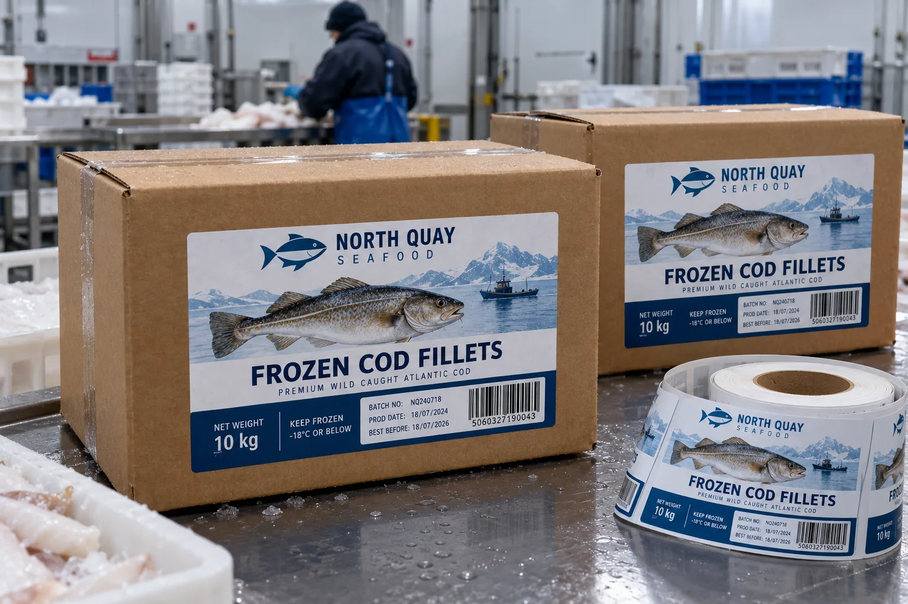

Ask when the label meets the carton
The seafood buyer may say the case goes to minus 18 degrees Celsius. I still need to know whether the label is applied before freezing in a dry packing room or after the carton comes from cold storage. Those are different bonding jobs. A good service-temperature rating does not establish successful application to frost.
HERMA's deep-freeze label guidance discusses cold and damp application challenges. Avery Dennison's cold-temperature guide includes corrugated among the surfaces that must be considered. Neither makes all cold adhesives interchangeable.
The corrugated case is not a smooth bottle
Imagine a composite processor packing frozen cod in two box sizes. The front panel looks flat in a dieline, but board flute, printing and pallet straps alter the real contact area. I would reserve a label zone clear of case tape and folded edges. A wide label bridging a corner may seem efficient on artwork and then lift during stacking.
A composite distributor scans the case code on an upper pallet tier. I would test the actual barcode after moisture, frost exposure and handling, from the position operators use. A scanner reading one dry sample on a desk does not prove the warehouse route works.
Run a two-stage trial
First, apply at the real case temperature and pressure, on the actual coated or uncoated corrugated board. Record surface dryness. Second, cycle filled cases through the intended freezer and handling route. Inspect adhesion, print legibility and scans after stacking. This concerns an outer shipping carton; any direct food-contact question belongs to the complete seafood package specification.
| Stage | What to record |
|---|---|
| Application | Case surface and temperature |
| Storage | Freezer duration and frost exposure |
| Handling | Edge lift, scuff and torn board |
| Dispatch | Barcode scan on stacked cases |
Our buying view
Do not buy by freezer rating alone
I would rather see one honest trial on the customer's corrugated case than a large order justified by a single temperature number. The bond starts at application, and the case still has to scan at dispatch.
Send the cold-chain conditions
- Filled case and board specification.
- Exact timing and temperature at labeling.
- Freezer storage and distribution route.
- Code sample, printer and scan requirement.
Read refrigerated food label materials for the broader cold-use question and barcode scan testing for case codes.
Frequently asked questions
Can a room-temperature label be applied to a frozen carton?
Not by assumption. Minimum application temperature and surface moisture must be checked for the exact adhesive and case.
Is freezer service temperature the same as application temperature?
No. A label may survive cold storage after bonding at room temperature but fail if applied to an icy case.
Where should the case barcode go?
Choose a flat, accessible panel away from tape, fold lines and abrasion points, then scan finished stacked cases.
Related buyer guides
Review your label specification
Send package photos, label dimensions, material details, quantity and application conditions. Include good and failed samples where possible so the discussion starts with evidence.